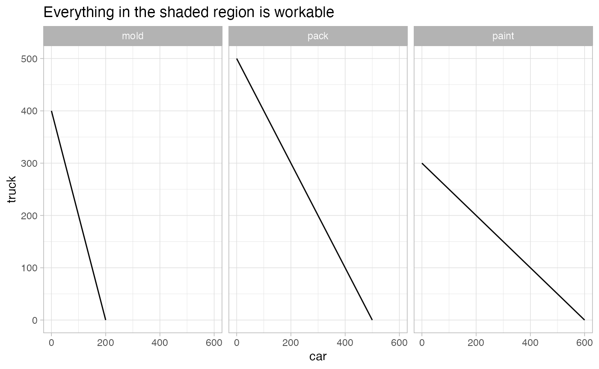
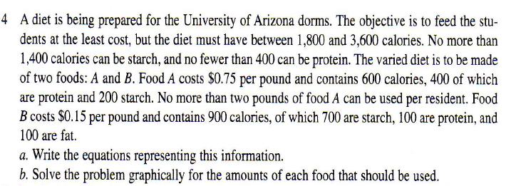
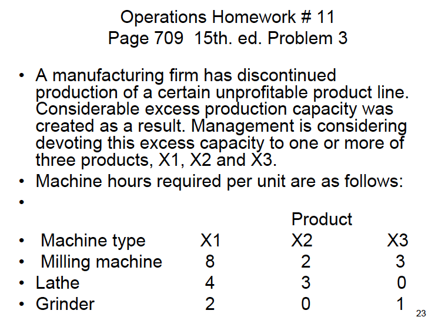
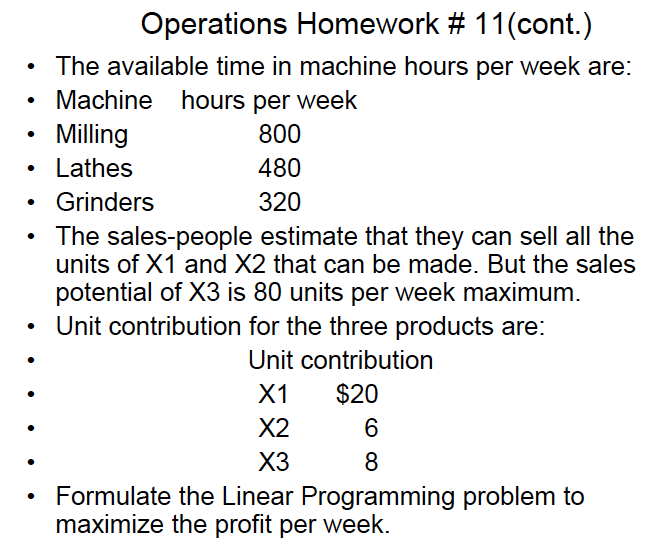
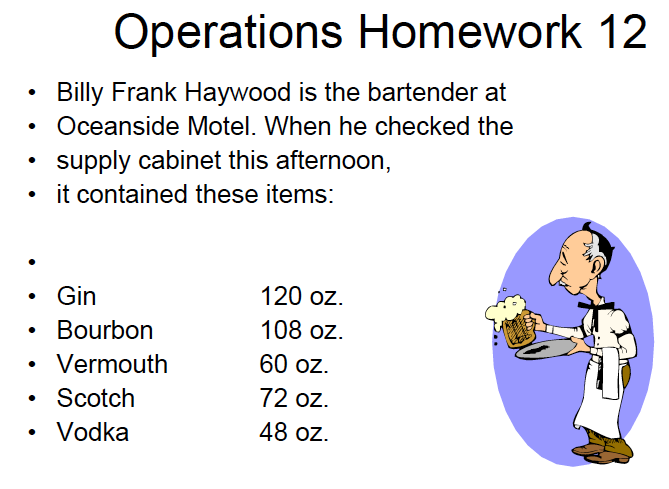
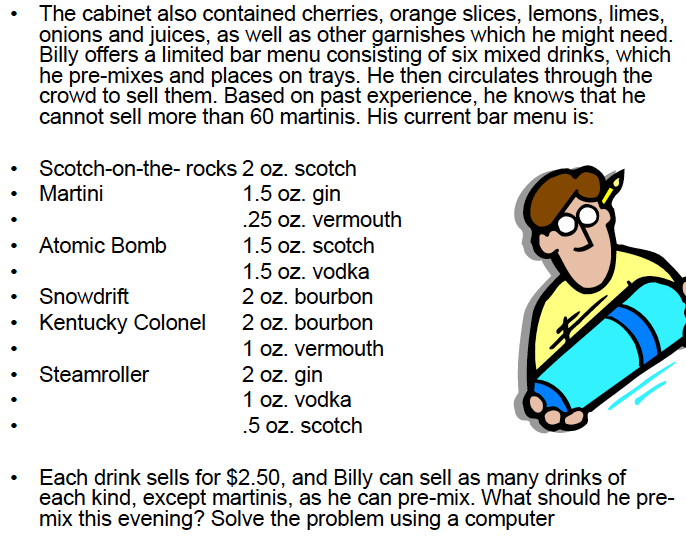

exam3-ops-online.RmdKnowing how long a project or task will take to complete.
Everything is costed according to a schedule and incentives are used to drive efficiency (quotas).
Emphasis on quality over quantity. Raw materials are the only true variable cost.
The amount of time it should take a normal qualified worker at a normal place to complete a specific task.
Purpose of time study is to:
# Worker is a bit faster than average (Performance Rate)
PR = 1.10
# Allowance factor
AF = .15
ObservedTime = mean(runif(10, 0, 10))
NormalTime = ObservedTime * PR
StandardTime = NormalTime * (1 + AF)Project management: tools are very similar to one another - essentialy the same used to manage Projects.
Project types:
Series of events that takes the longest amount of time - will determine how long the project will take.
The task from node 1 to node 3 is the longest task. Both activity from 1 to 2, and activity from 1 to 3 occur at the same time. The activity from node 2 to 3 can not begin until the activity from node 1 to 2 is completed.
# Project evaluation review technique
library(visNetwork)
library(tibble)
list(
nodes = tibble(
id = 1:3,
label = id,
shape = 'ellipse'
),
edges = tibble(
from = c(1,2,1),
to = c(2,3,3),
label = c(8, 3, 14)
)
) %>%
{
visNetwork(
nodes = .[[1]], edges = .[[2]],
main = 'PERT')
} %>%
visEdges(
arrows =list(to = list(enabled = TRUE, scaleFactor = 1)),
color = list(color = "lightblue", highlight = "red"))Generally minimum time units are hours.
# Calculate TE time estimates for measuring critical paths
# Most optimistic time
a=4
# Most pesimistic time
b = 10
# Best guess
m = 7
TimeEstimate = (a + 4*m + b) / 6Critical path is based on the normal distribution.
Central limit theorem - as the sample size increase, the distibution will look like the normal distribution.
Critical path is the longest route to completing the proejct - the activity or objective that will require the most attention.
A - since it is the only beginning event, it must be on the critical path. K - since it is the only ending event, it must be on the critical path.
Nodes
te time estimate for each point
EF (TE): Expected completion for that particular point in the project - when will I expect to be at various specific points throughout the project. - It is calculated by adding the cumulative time of the first node, plus the time it takes to get to the next node.
1 -3-> 2 [[3]] 2 -5-> 4 [[8]] - Calculated by adding 3 + 5 == 8 (EF value for node 2->5) - If the ending node has more than one preceding nodes, use the largest value since the next activity can not begin until all preceding activities are finished.
LF (TL): Latest expected completion time that will not delay the project - Start at the bottom and work backwards - You project is on schedule as long as you are not taking any more time than necessary to complete the critical path. - Look at ending nodes and choose the activity with the critical path (activity that requires the most time).
SLACK: LF - EF == SLACK - How much time you have until you delay the entire project.
CP - Is the most important/ significant event on the critical path - Near critical path events require just as much attention
Multiple beginning and ending events
list(
nodes = tibble(
id = letters[1:12],
label = id,
shape = 'ellipse'
),
edges = dplyr::bind_rows(
tibble(
from = c('a', 'b', 'b', 'c', 'f', 'f', 'g', 'g', 'h', 'h', 'j'),
to = c('b', 'c', 'd', 'e', 'g', 'h', 'i', 'j', 'i', 'j', 'k'),
label = c(15, 12, 12, 6, 8, 8, 8, 8, 9, 9, 14),
),
tibble(
from = c('d', 'e', 'i', 'k'),
to = c('k','k','k', 'l'),
label = c(5, 3, 7, 7),
)
)
) %>%
{
visNetwork(
nodes = .[[1]], edges = .[[2]],
main = 'PERT')
} %>%
visEdges(
arrows =list(to = list(enabled = TRUE, scaleFactor = 1)),
color = list(color = "lightblue", highlight = "red"))Things with more critical paths will be more vulnerable to delaying the project.
Company makes two products: activity based costing.
We want to maximize contribution - what is the selling price minus the cost to make the product. What is the proper mix of products.
# inputs
setup <- tibble::tibble(
product = c('car', 'truck'),
mold = c(2, 1),
paint = c(1, 2),
pack = c(1, 1),
) %>%
gather('department', 'time', -product) %>%
left_join(
tibble::tibble(
capacity = c(400, 600, 500),
department = c('mold', 'paint', 'pack')
)) %>%
dplyr::mutate(
output = capacity / time
) %>% tibble::rowid_to_column()
#> Joining, by = "department"
setup
#> # A tibble: 6 x 6
#> rowid product department time capacity output
#> <int> <chr> <chr> <dbl> <dbl> <dbl>
#> 1 1 car mold 2 400 200
#> 2 2 truck mold 1 400 400
#> 3 3 car paint 1 600 600
#> 4 4 truck paint 2 600 300
#> 5 5 car pack 1 500 500
#> 6 6 truck pack 1 500 500Maximize: 2car+2truck Subject to: - 2car+1truck<=400 Mold department - 1car+2truck<=600 Paint department - 1car+1truck<=500 Pack department
You can’t use more time that you don’t have.
setup %>%
spread(product, output, fill = 0) %>%
ggplot(aes(car, truck), fill = product) +
geom_path() +
labs(title = 'Everything in the shaded region is workable') +
facet_wrap(vars(department))
The best possible combinations are the corner points - all of one product or a combination of both that achieves the maximum profit (corner point).
The recommended solution will be the combination that achieves the maximum output.
SLACK variable - your constraints will always be less than or equal to the maximum capacity allowed for a specific process or activity. Slack is the residual capacity between what is required and the max capacity. Not all activities will have slack.
We want to maximize the contribution given a list of products. Anything problem that contains three or more products cannot be graphed so we will solve using an equation.
Contribution for each product:
Next we set up our constraints - the requirements to produce one unit of a given product.
Subject to: Each coefficient is the required units it takes to produce the given product.
# Mill: has a max capacity of 1200
# 12A + 10B + 8C <= 1200
mill_constraint = c(12, 10, 8)
# Inspect
# 5A + 4B + 4C <= 900
inspect_constraint = c(5, 4, 4)
# Drill
# 10A + 8B + 16C <= 1440
drill_constraint = c(10, 8, 16)
# Problem setup
f.type <- 'max'
# contribution of each product
f.products <- c(A, B, C)
# Requirements for each department
f.constraints <- matrix(
c(mill_constraint, inspect_constraint, drill_constraint), nrow = 3, byrow = TRUE
)
# Constraints will always be <= for maximazation
f.direction <- c('<=', '<=', '<=')
# Capacity per department
f.capacity <- c(1200, 900, 1440)
resp = lp(f.type, f.products, f.constraints, f.direction, f.capacity)
# Answer 0A + 80B + 50C
# Payoff: 350 in contribution
resp$solution
#> [1] 0 80 50
resp$constraints
#> [,1] [,2] [,3]
#> 12 5 10
#> 10 4 8
#> 8 4 16
#> const.dir.num 1 1 1
#> const.rhs 1200 900 1440
resp
#> Success: the objective function is 350We can calculate there will be 380 slack in the inspection department:
inspect_req = 50 * 4 + 80 * 4
# Inspection capacity - solution requirements
SLACK = 900 - inspect_req
SLACK
#> [1] 380Using minimum and maximum constraints. Solving for the number of pounds of each product that gives the lowest cost and meets a caloric, starch, and protein requirements.

Contribution: We want to minimize the contribution to our spend.
FOOD_A = .75
FOOD_B = .15Subject to (requirements): Capacity or requirements for each input starch, protein, calories, pounds product a.
# Starch 200A + 700B <= 1400
starch = c(200, 700)
# Protein 400A + 100B >= 400
protein = c(400, 100)
# Maximum product a in lbs 1A <= 2
lbs_a = c(2, 0)
# Calories 600A + 900B <= 3600
# Calories 600A + 900B >= 1800
upper_calorie = c(600, 900)
lower_calorie = c(600, 900)
# Capacity for each
capacity_starch = 1400
min_protein = 400
capacity_a = 2
capacity_calorie = 3600
min_calorie = 1800 Solving the promblem:
library(lpSolve)
# Minimization problem
direction = "min"
# Contribution for each product towards total spend
p.contribution = c(FOOD_A, FOOD_B)
# Capacity/ min of each product
p.products = matrix(
c(starch, protein, lbs_a, upper_calorie, lower_calorie), nrow = 5, byrow = TRUE
)
# Direction - is it min or max
p.direction = c('<=', '>=', '<=', '<=', '>=')
# Capacity right hand side
p.capacity = c(capacity_starch, min_protein, capacity_a, capacity_calorie, min_calorie)
resp_food = lp(
direction = direction, objective.in = p.contribution,
const.mat = p.products, const.dir = p.direction, const.rhs = p.capacity
)
# Answer: 0.5384 pound A, 1.8461 pounds B will give the least expensive required meal.
# Contribution will be the total cost in this scenario: 0.68076
# We can calculate the slack and surplus for each variable by multiplying the
# payoff coefficient variable for the answer by the product matrix coefficient, and
# subtracting from the capacity or limit.
resp_food$solution
#> [1] 0.5384615 1.8461538
resp_food
#> Success: the objective function is 0.6807692Surplus variables:
Multiple products same as above.


The key here is that the maximum number of products that can be sold of product three by sales is 80. This is a normal constraint just like each other capacity limit.
Contribution or payoff for each of the products: Maximization - achieve the best product mix that will give the highest profit.
# Contribution
X1 = 20
X2 = 6
X3 = 8Constrains: Subject to (requirements): Constraint matrix
# milling 8X1 + 2X2 + 3X3 <= 800
milling = c(8, 2, 3)
# lathe 4X1 + 3X2 + 0X3 <= 480
lathe = c(4, 3, 0)
# grinder 2X1 + 0X2 + 1X3 <= 320
grinder = c(2, 0, 1)
# x3_produxtion 0X1 + 0X2 + 1X3 <= 80
x3_production = c(0, 0, 1)Capacity for each unity, activity, constraint. But the sales potential for X3 is limited to 80 units per week.
cap_milling = 800
cap_lathe = 480
cap_grinder = 320
cap_x3 = 80Solve the problem
library(lpSolve)
# Maximize profit
z.direction = 'max'
# Contribution of each product
z.contribution = c(X1, X2, X3)
# Subject to capacity matrix
z.subject_to = matrix(
c(milling, lathe, grinder, x3_production), nrow = 4, byrow = TRUE
)
z.directions = c('<=', '<=', '<=', '<=')
z.capacity = c(cap_milling, cap_lathe, cap_grinder, cap_x3)
z.resp = lp(
direction = z.direction, objective.in = z.contribution,
const.mat = z.subject_to, const.dir = z.directions, const.rhs = z.capacity
)
# Answer: Production is 45X1, 100X2, and 80X3 which will produce a payoff of
# 2,140.
z.resp$solution
#> [1] 45 100 80
z.resp
#> Success: the objective function is 2140

The problem is asking what is the correct combination of drinks that will produce the highest payoff. There is a capacity on one type of drink, Martinis. The contribution of all drinks is the same, 2.50.
library(lpSolve)
# Contribution is 2.50 for all drinks
drink.direction = 'max'
# Subject to: capacity for each input
gin = 120
bourbon = 108
vermouth = 60
scotch = 72
vodka = 48
Martini = 60
# not all drinks require an input - transpose
# need the ingredients as parts of each output, a drink.
drink.matrix = matrix(
c(
# S, M, AB, SD, KC, SR
c(0, 1.5, 0, 0, 0, 2), # gin
c(0, 0, 0, 2, 2, 0), # bourbon
c(0, .25, 0, 0, 1, 0), # vermouth
c(2, 0, 1.5, 0, 0, .5), # scotch
c(0, 0, 1.5, 0, 0, 1), # vodka
c(0, 1, 0, 0, 0, 0) # Martini
), nrow = 6, byrow = TRUE
)
# Contribution is 2.50
drink.contribution = rep(2.50, 6)
# Direction - capacity <=
drink.direction_capacity = rep('<=', 6)
# Drink capacity - right hand side
# [spirits, drinks]
# g, b, v, s, v
drink.capacity = c(gin, bourbon, vermouth, scotch, vodka, Martini)
drink.resp = lp(
direction = drink.direction, objective.in = drink.contribution,
const.mat = drink.matrix, const.dir = drink.direction_capacity,
const.rhs = drink.capacity
)
# The payoff is 426.47 -
drink.resp
#> Success: the objective function is 416.875
drink.resp$solution
#> [1] 15.75 60.00 22.00 54.00 0.00 15.00Should always be able to calculate the slack variable.
If a constraint is that the solution must equal four ounces, then take the sum of all inputs = to four.
A + B + C + D = 4